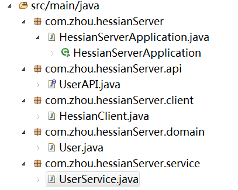

Hessian是一个轻量级的RPC框架，它可以以WEB接口的形式提供RPC服务，因为Hessian是一个二进制协议，所以特别适合用来传送二进制数据。下面就用一个简单的例子来演示一下怎么使用Hessian。
首先创建一个Spring Boot Web工程，这个通过Spring Initializer页面就可以创建了，Dependencies里面选上Web就行了。
用Eclipse导入这个工程，然后新建一个简单的domain对象User，我们的客户端和服务端就通过这个类来交互数据1
2
3
4
5
6
7
8
9
10
11
12
13
14
15public class User implements Serializable {
private static final long serialVersionUID = -3272769708611790992L;
private String name;
private String job;
public User(String name, String job) {
this.name = name;
this.job = job;
}
public String toString() {
return "name = " + this.name + ", job = " + this.job;
}
}
要注意因为要通过网络传送User类的数据，所以User类一定要实现Serializable接口。
然后建立一个简单的接口UserAPI，服务端负责实现这个方法，而客户端则通过RPC调用这个方法。1
2
3public interface UserAPI {
User getUser();
}
接下来是UserService，这个负责实现具体的getUser，继承HessianServlet是因为Hessian是通过Servlet来提供Http服务的。1
2
3
4
5
6(urlPatterns = "/userservice")
public class UserService extends HessianServlet implements UserAPI {
public User getUser() {
return new User("Zhou", "Programmer");
}
}
为了让Spring Boot注册Servlet，还需要给HessianServerApplication加一个@ServletComponentScan的注解1
2
3
4
5
6
7
8
public class HessianServerApplication {
public static void main(String[] args) {
SpringApplication.run(HessianServerApplication.class, args);
}
}
然后通过Run as Java Application启动这个简单的Spring Boot程序，然后用浏览器访问http://127.0.0.1:8080/userservice，可以看到一行提示“Hessian Requires POST”，说明服务已经启动成功了，接下来需要编写客户端代码，来验证RPC能力了。这里为了方便共用User和UserAPI，我把客户端代码和服务端代码直接放在了同一个工程里面，正常情况下，应该是把User和UserAPI封装到一个独立的jar包里面，客户端和服务端都引用这个jar包即可。
客户端代码很简单，就是先生成一个HessianProxyFactory，然后通过这个工厂创建RPC调用的代理，然后就可以像调用本地对象一样调用远程的方法了，运行之后，输出了
User: name = Zhou, job = Programmer
客户端代码如下1
2
3
4
5
6
7
8
9
10
11public class HessianClient {
public static void main(String[] args) throws MalformedURLException {
String url = "http://127.0.0.1:8080/userservice";
HessianProxyFactory factory = new HessianProxyFactory();
UserAPI service = (UserAPI) factory.create(UserAPI.class, url);
System.out.println("User: " + service.getUser());
}
}
工程的整体结构如下图

最后，关于Service继承HessianServlet还要多说几句，这是因为Spring Boot不支持web.xml，如果是其他架构，可以支持写web.xml的，可以直接使用HessianServlet，而把自己写的Service作为一个参数传给它，这样Service就不需要继承HessianServlet了，如下所示1
2
3
4
5
6
7
8
9
10
11
12<servlet>
<servlet-name>HessianServlet</servlet-name>
<servlet-class>com.caucho.hessian.server.HessianServlet</servlet-class>
<init-param>
<param-name>service-class</param-name>
<param-value>com.zhou.hessianServer.service.UserService</param-value>
</init-param>
</servlet>
<servlet-mapping>
<servlet-name>HessianServlet</servlet-name>
<url-pattern>/userservice</url-pattern>
</servlet-mapping>